Este manual mostra o Crew uma tarefa por vez: primeiro o trabalhador e o encarregado (no celular), depois o escritório (no computador). Os nomes de telas, botões e mensagens estão escritos exatamente como aparecem no KORbuild, em negrito.
Antes de começar
O Crew abre na área do seu perfil: o trabalhador vai direto para o Meu ponto (sem tela de módulos); o encarregado abre no Ponto da equipe; o escritório abre em Agora. Se você não vê uma tela descrita aqui, o seu perfil não a inclui — veja Perfis e permissões.
Trabalhador: bater o ponto no próprio celular
Para que serve: registrar o próprio dia, com a hora e o local de cada batida.
Quem pode fazer
Quem tem Bater o próprio ponto (perfil padrão: Trabalhador).
- Abra o KORbuild. O Meu ponto abre direto, com a Hora oficial do ponto, a situação de hoje (por exemplo, Ainda não bateu entrada) e um botão grande com o que cabe agora.
- Toque em Bater entrada. Abre uma janela:
- Obra — onde você está trabalhando (só aparecem obras em andamento).
- A distância até a obra, em verde quando você está dentro da cerca ✓, ou em vermelho quando está fora.
- Etapa (cost code) — o serviço em que você vai trabalhar.
- Foto da equipe (opcional) — abre a câmera.
- Nota (opcional) — por exemplo, o material atrasou; saí mais cedo com autorização do encarregado.
- Confirme. A sua batida fica registrada com a hora, a posição do GPS e a precisão.
- Ao longo do dia, o mesmo botão muda para o que cabe: começar o intervalo, voltar do intervalo, trocar de obra, bater a saída.
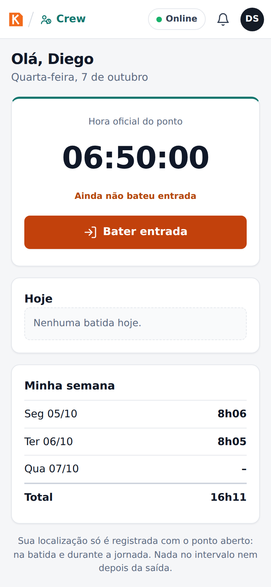
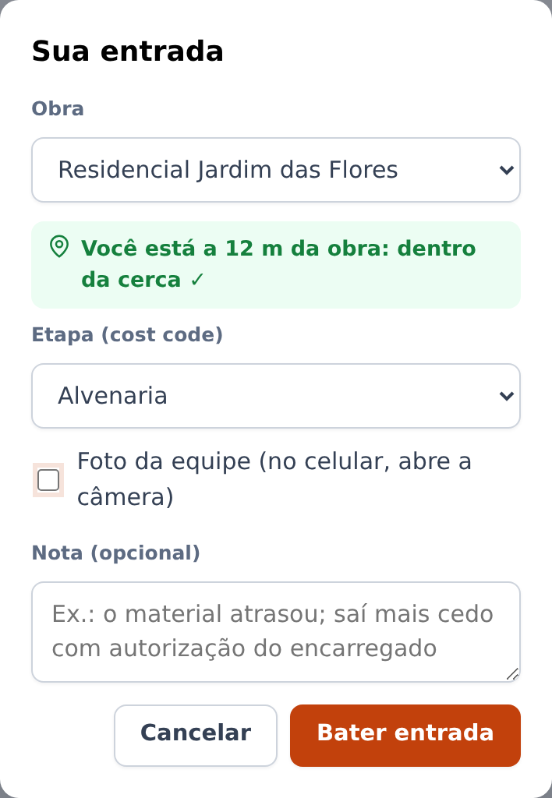
Abaixo do botão, Hoje lista as suas batidas e Minha semana mostra as horas por dia e o total. O trabalhador nunca vê valores em dinheiro.
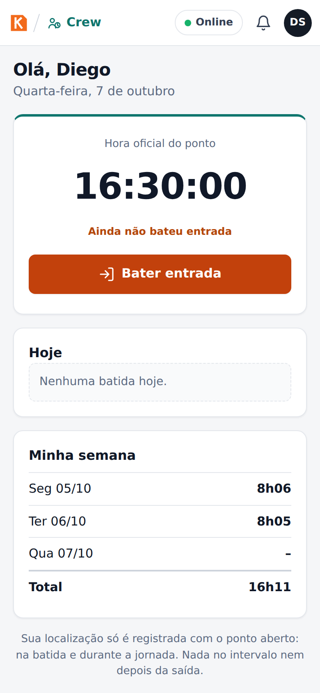
A sua localização
A localização só é registrada com o ponto aberto: em cada batida e durante a jornada. Nada é registrado no intervalo nem depois da saída. A tela avisa isso embaixo.
Na conta de verdade, na primeira vez que você abre o ponto aparece um cartão Aviso sobre a sua localização explicando isso; o registro só começa depois que você toca em Li e aceito. Ele registra com o app aberto; com o app fechado ou a tela bloqueada, nada é registrado.
Encarregado: bater o ponto da equipe inteira
Para que serve: um celular bate o ponto da equipe toda de uma vez — o jeito mais comum de trabalhar no canteiro.
Quem pode fazer
Quem tem Bater o ponto da equipe (perfil padrão: Encarregado).
- Abra o Crew. O Ponto da equipe mostra a Hora oficial do ponto, quantos estão trabalhando, em intervalo, em deslocamento e fora, e a lista da equipe com a situação de cada pessoa.
- Selecione as pessoas: toque em cada uma, ou em Selecionar todos. A barra de baixo diz quantas estão selecionadas e liga os botões que fazem sentido para elas (por exemplo, Entrada (6)).
- Toque em Entrada. O KORbuild localiza o celular e mostra a distância até a obra ("dentro da cerca ✓" ou "fora da cerca. A batida fica marcada para o escritório conferir."). Escolha a etapa, tire uma foto da equipe se quiser, escreva uma nota e confirme.
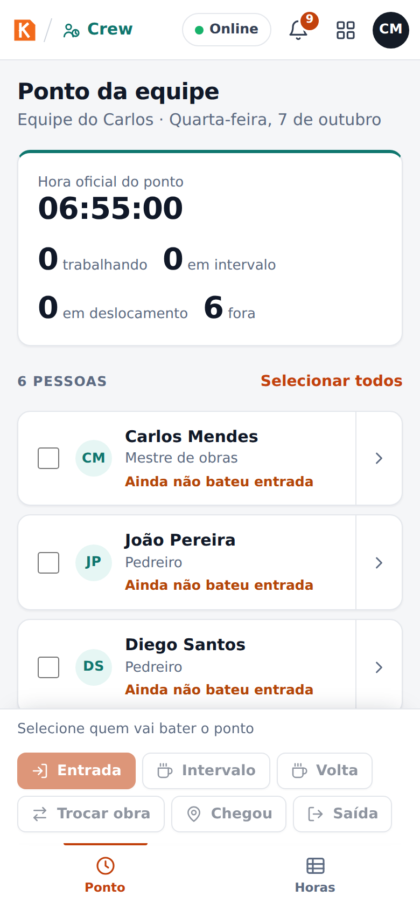
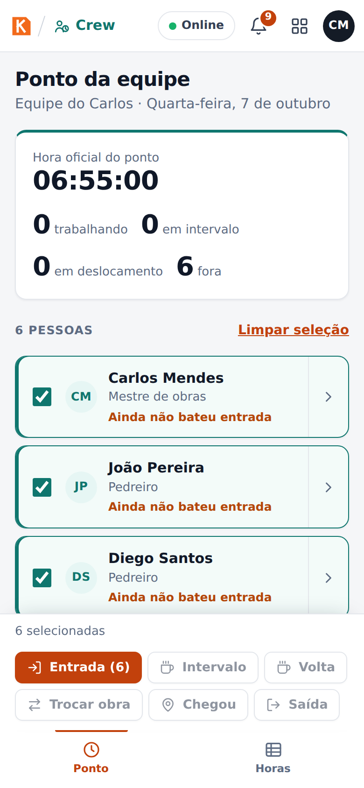
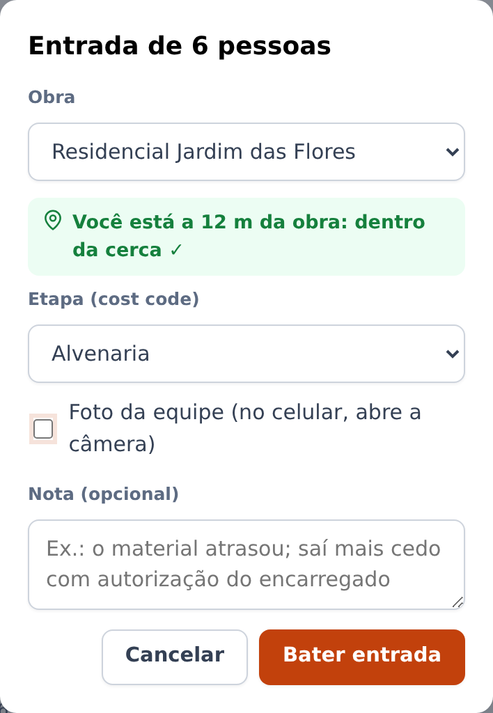
Cada pessoa recebe a própria batida, que registra quem bateu (o encarregado). Sem ninguém selecionado, os botões ficam desligados.
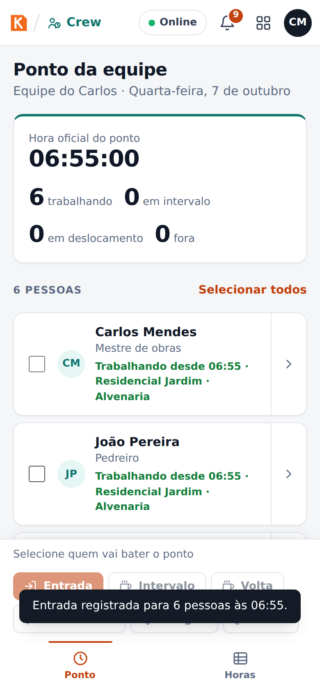
Intervalo e saída
- Intervalo e Volta cobrem o intervalo de refeição (um toque, sem janela).
- Saída encerra o dia. O KORbuild pergunta antes de bater — se alguém continua trabalhando, deixe essa pessoa fora da seleção.
Trocar de obra
- Selecione as pessoas e toque em Trocar de obra.
- Escolha Para qual obra? e toque em Sair para a obra. A batida é feita onde vocês estão (a obra de onde estão saindo), e começa o deslocamento. O tempo até a outra obra conta como hora trabalhada.
- Ao chegar, toque em Chegou, escolha a Etapa nesta obra e Registrar chegada. A chegada é conferida pela cerca da obra nova.
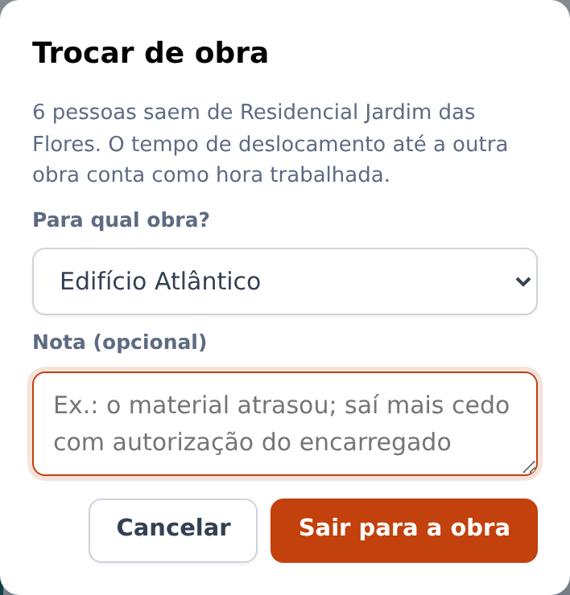
Encarregado: conferir as horas da equipe
Horas mostra a semana da equipe: horas por pessoa e por dia. Um ! vermelho indica algo para conferir — uma saída que faltou, uma batida fora da obra ou um intervalo que não foi feito. Quem aprova as horas é o escritório.
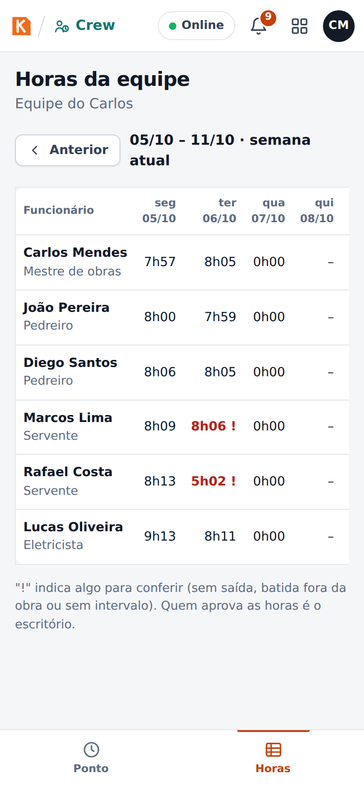
Escritório: ver quem está trabalhando agora
Quem pode fazer
Quem tem Acompanhar ponto e timesheets (perfis padrão: Administrador e Gestor de obras).
Agora mostra:
- Trabalhando agora, Em intervalo, Em deslocamento e Horas hoje.
- Batidas fora da obra para conferir: batidas fora da cerca, com a distância até a obra. Ver dia abre o mapa do dia da pessoa; Conferido marca como verificada (a batida continua registrada como fora da cerca).
- Cada obra com as pessoas que bateram ponto nela, desde que horas e em qual etapa.
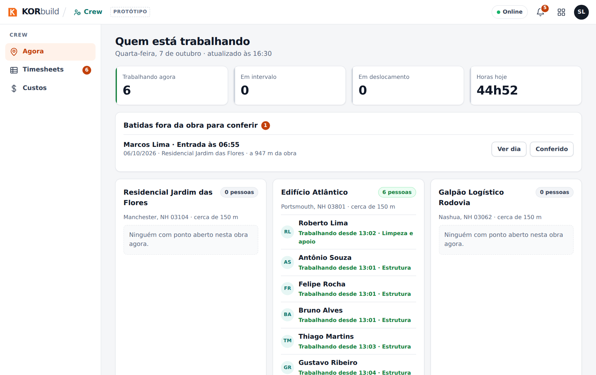
Escritório: aprovar a semana (timesheets)
Quem pode fazer
Quem tem Aprovar e ajustar timesheets (perfis padrão: Administrador e Gestor de obras).
- Abra Timesheets. Use Anterior e Próxima para trocar de semana (segunda a domingo).
- No alto: Horas na semana, Horas extras, Custo de mão de obra (com a permissão de custos) e Aguardando aprovação.
- A tabela tem uma linha por pessoa: horas por dia, Total, Extra, Custo e Situação (Aprovado, Aguardando aprovação…).
- Marque as pessoas e clique em Aprovar selecionados, ou abra uma pessoa e clique em Aprovar semana.
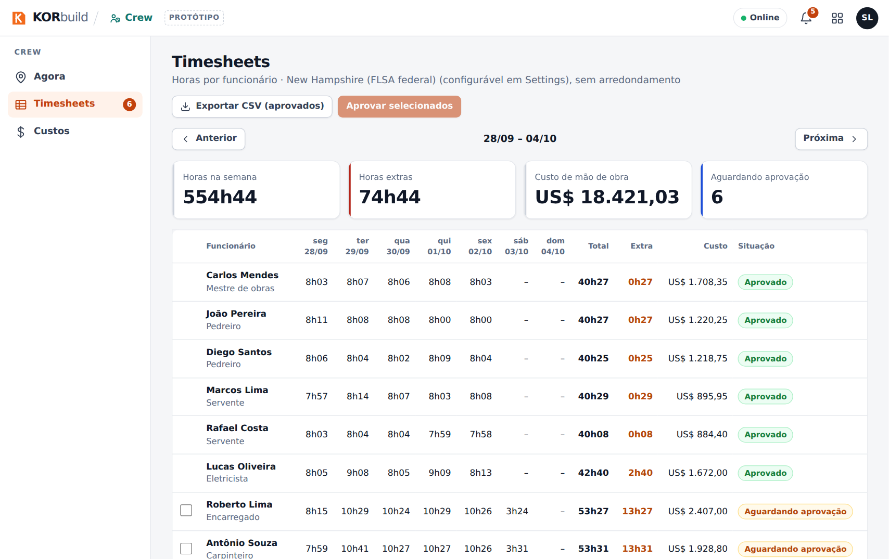
A semana não pode ser aprovada enquanto alguém estiver sem saída: o KORbuild lista quem precisa ser corrigido antes. As horas aprovadas ficam liberadas para a folha.
Abrir a semana de uma pessoa
Clique numa pessoa para ver a semana dela: total, horas normais, extras e custo, e cada dia com os trechos (trabalho numa obra e etapa, intervalo, deslocamento), o Mapa do dia e Ajustar.
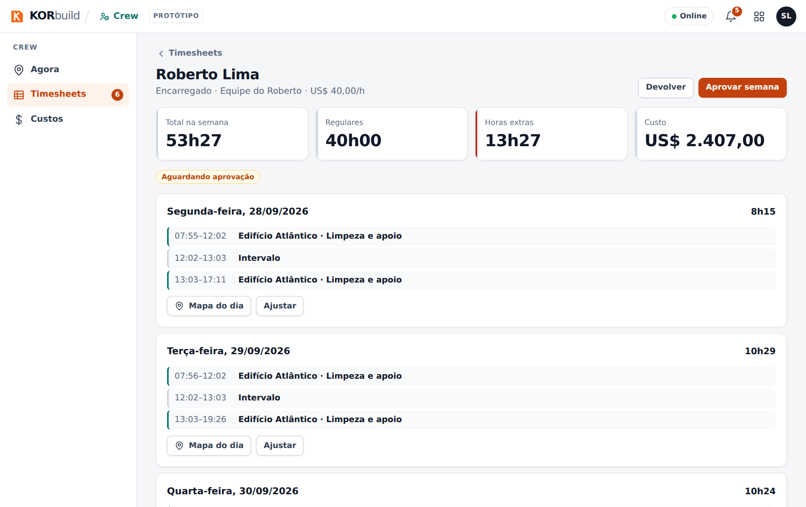
Devolver uma semana
Devolver manda a semana de volta para o encarregado. Escreva O que precisa ser revisto? (por exemplo, confirmar a saída de terça com o encarregado) e clique em Devolver.
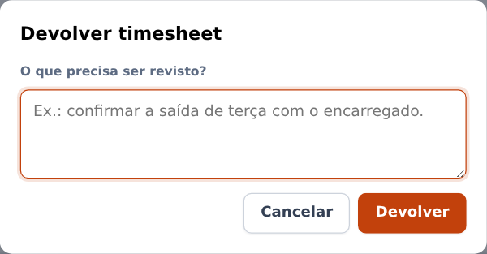
Ajustar um dia (por exemplo, uma saída esquecida)
- Na semana da pessoa, clique em Ajustar no dia.
- Escolha a Batida (saída, início do intervalo, fim do intervalo, entrada), a Hora e o Motivo (por exemplo, esqueceu de bater a saída; confirmado com o encarregado).
- Clique em Registrar ajuste.
O ajuste entra como uma batida nova, marcada como ajuste, com o seu nome e o motivo. As batidas originais continuam à vista.
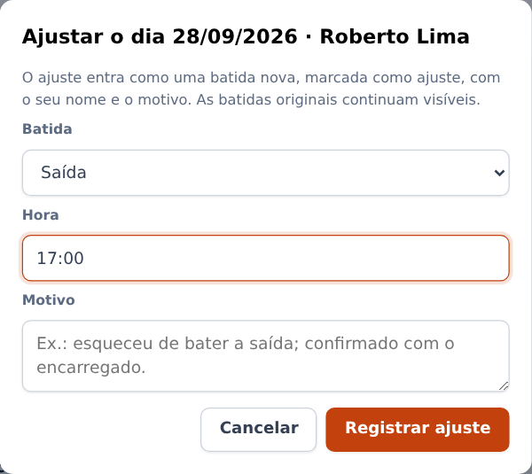
Exportar para a folha
Exportar CSV (aprovados) baixa as horas aprovadas da semana, uma linha por trecho (semana, funcionário, função, data, obra, etapa, tipo, início, fim, horas, situação), pronto para sistemas de folha como QuickBooks, Gusto ou ADP.
Escritório: ver o dia de uma pessoa no mapa
O Mapa do dia (em Agora › Ver dia, ou na semana da pessoa) mostra o dia num mapa de ruas:
- a Entrada (E verde) e a Saída (S escuro), o número de registros e a distância percorrida;
- as obras, numeradas na ordem da visita, com a cerca;
- os pontos de localização registrados durante a jornada, ligados por setas no sentido do trajeto;
- as batidas fora da obra, em vermelho;
- Reproduzir repassa o dia, com o relógio na tela; Tela cheia amplia o mapa.
Abaixo do mapa: o percurso do dia (obra → deslocamento → obra, com a distância e os minutos), a lista dos registros de localização (toque num deles para vê-lo no mapa) e a linha do tempo das batidas, com cerca, precisão, quem bateu, foto e ajustes.
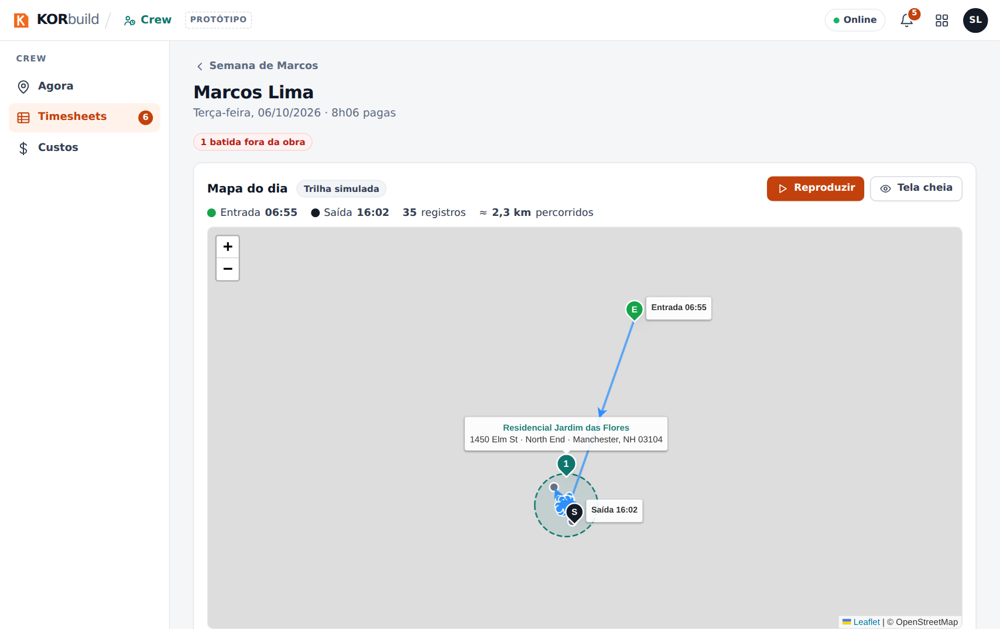
No protótipo
O trajeto entre as batidas é simulado a partir delas (o mapa mostra Trilha simulada). Na conta de verdade, os pontos vêm do GPS do celular com o app aberto e o ponto aberto; os trechos sem registro (app fechado ou sem sinal) são avisados embaixo do mapa. Registrar com o app fechado precisa do app das lojas. Mapas de ruas, rotas e endereços usam serviços públicos gratuitos; sem internet, o mapa vira um desenho simples.
Escritório: acompanhar o custo de mão de obra por obra
Quem pode fazer
Quem tem Ver custos e valores em dinheiro (perfis padrão: Administrador e Gestor de obras).
Custos › Obras mostra, de todas as obras, o Orçamento de mão de obra, o Realizado até hoje, a Projeção ao final e o Estouro previsto, e para cada obra:
- a situação: No rumo, Atenção ou Estouro previsto;
- Orçado, Realizado (% do orçamento), Projeção ao final e o estouro ou a economia;
- as barras de Prazo decorrido, Orçamento consumido e Avanço físico;
- o gráfico do Realizado (acumulado), do Planejado e da Projeção até o fim da obra;
- as tabelas por etapa e semana a semana.
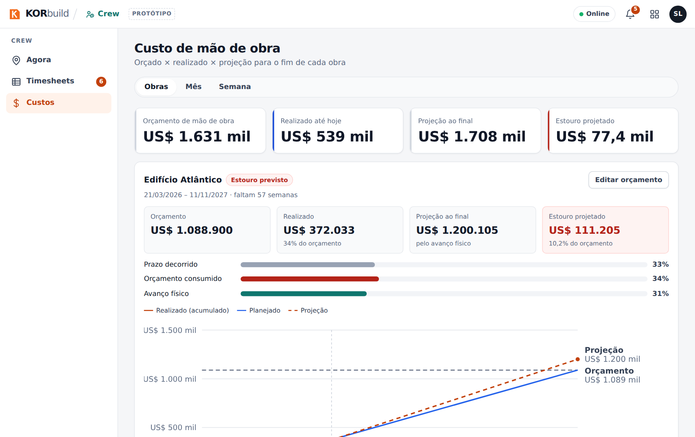
Editar orçamento define o Orçamento total de mão de obra (US$) e o Avanço físico da obra (%). A projeção e a situação são recalculadas na hora.
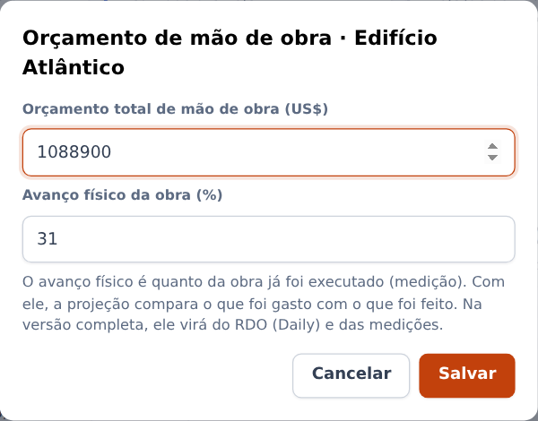
Mês e Semana mostram o custo do período por obra e por etapa, separado em salários, adicional de hora extra e encargos — para o fechamento e a conferência.
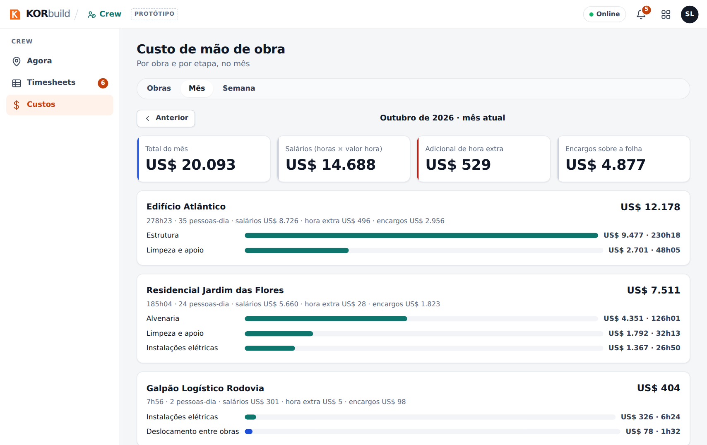
Como funciona a projeção
Com o avanço físico, projeção = realizado ÷ avanço (gastou 34% e executou 31% quer dizer cerca de 10% acima do orçamento). Sem ele, o KORbuild usa o ritmo das últimas 4 semanas completas até a data de término.
Notificações
| Quando | Quem | Mensagem |
|---|---|---|
| A semana passada tem timesheets sem aprovar | Escritório | N timesheets da semana passada aguardando aprovação |
| Uma batida fora da obra nas últimas 48 horas, não conferida | Escritório | Nome: entrada fora da obra |
| Alguém da equipe ficou sem saída ontem | Encarregado | Nome ficou sem saída ontem: avise o escritório |
| 8h de um dia de trabalho e ninguém da equipe bateu entrada | Encarregado | Sua equipe ainda não bateu a entrada hoje |
Mensagens e alertas
| Mensagem | Onde | O que fazer |
|---|---|---|
| dentro da cerca ✓ / fora da cerca | Janela da entrada | Fora é aceito: a batida fica marcada para o escritório. |
| ! ao lado das horas | Horas, Timesheets | Algo para conferir: saída que faltou, batida fora da obra ou intervalo não feito. |
| Antes de aprovar, ajuste as batidas sem saída de: … | Ao aprovar | Abra a semana da pessoa e Ajustar o dia. |
| Confirmação da saída | Saída | Deixe fora quem ainda está trabalhando. |
| Batida conferida. Ela continua registrada como fora da cerca. | Agora | Nada: ela foi marcada como verificada. |
| Não é possível começar dentro de uma semana já aprovada (já foi para a folha). | Ao alterar um valor hora (Settings) | Escolha uma data a partir da próxima semana em aberto. |